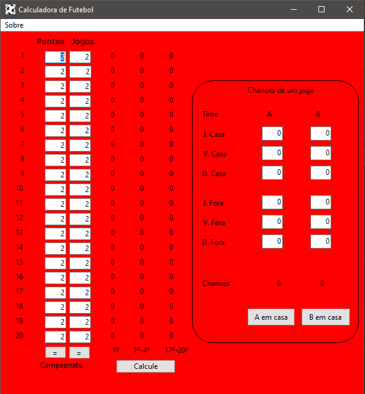

Matemática de Futebol
Este é meu programa que calcula as chances num campeonato
de ponto corrido com base apenas numa análise estática da tabela,
sem fazer simulações e nem levar em conta número de vitórias ou
saldo de gols. Esta é a versão "didática" onde
coloco só a parte do código (agora em pascal) pertinente ao método.
programfutebol;varaa,bb,cc,pon,jog:array[1..20]ofinteger;chnc,SS,Si:array[1..20]ofreal;P,S,C:array[1..120,1..20]ofdouble;soma:double;i,j,k,m,a:integer;beginwriteln('Entre a pontuacao dos times');fori:=1to20dobeginreadln(pon[i]);end;writeln('Entre o numero de jogos');readln(jog[1]);fori:=2to20dobeginjog[i]:=jog[1];end;//Estamos assumindo que todos os times tem mesmo número de jogos.// Calculo dos parametros a, b e c. Ver explicação ao final.fori:=1to20dobeginaa[i]:=pon[i]-1;cc[i]:=pon[i]+3*(38-jog[i])+1;bb[i]:=round(double(38*pon[i])/double(jog[i]));//38 é o número de rodadasend;// Na matriz, i é a pontuacao, j é o timefori:=1to114dobeginforj:=1to20dobeginP[i,j]:=0.0;s[i,j]:=0.0;c[i,j]:=0.0;end;end;// calculando as probabilidades de cada time obter uma dada pontuacaoform:=1to20dobeginfori:=aa[m]tobb[m]dobeginP[i,m]:=(2.0/(cc[m]-aa[m]))*(i-aa[m])/(bb[m]-aa[m]);end;fori:=bb[m]+1tocc[m]dobeginP[i,m]:=(2.0/(cc[m]-aa[m]))*(-i+cc[m])/(cc[m]-bb[m]);end;end;// Matriz soma de probabilidades inferioresform:=1to20dobeginfori:=pon[1]tocc[1]-1dobeginfork:=pon[m]toi-1dobeginS[i,m]:=S[i,m]+P[k,m];end;end;end;// Matriz probabilidade de ser campeao por pontuacao finalfori:=pon[1]tocc[1]-1dobeginforj:=1to20dobeginC[i,j]:=P[i,j];fork:=1to20dobeginifk<>jthenbeginC[i,j]:=C[i,j]*S[i,k];end;end;end;end;fori:=1to20dobeginchnc[i]:=0.0;end;// chance total de ser campeaofori:=pon[1]tocc[1]-1dobeginforj:=1to20dobeginchnc[j]:=chnc[j]+c[i,j];end;end;fori:=1to20dobeginchnc[i]:=chnc[i]*100.0;end;soma:=0.0;fori:=1to20dobeginsoma:=soma+chnc[i];end;// normalizacaofori:=1to20dobeginchnc[i]:=chnc[i]*100.0/soma;end;(* calculo aproximado das chances de classificacaoMatriz soma de probabilidades superiores apontuacao mais provavel do 4 colocado. *)form:=1to20dobeginSS[m]:=0.0;fori:=bb[4]tocc[1]-1dobegin// pontuacao considerada de b[4] atemaximo do 1º colocado.SS[m]:=SS[m]+P[i,m];end;end;fori:=1to20dobeginSS[i]:=SS[i]*100.0;end;soma:=0.0;fora:=1to20dobeginsoma:=0.0;fori:=1to20dobeginsoma:=soma+SS[i];end;// normalizacaofori:=1to20dobeginSS[i]:=SS[i]*400.0/soma;ifSS[i]>100.0thenbeginSS[i]:=100.0;end;end;soma:=0.0;fori:=1to20dobeginsoma:=soma+SS[i];end;end;(* calculo aproximado das chances de rebaixamentoIsso é identico a classificacao, mas considera 16 ao invésde 4, e depois pega o complementar para 100% *)form:=1to20dobeginSI[m]:=0.0;fori:=bb[16]tocc[1]-1dobeginSI[m]:=SI[m]+P[i,m];end;end;fori:=1to20dobeginSI[i]:=SI[i]*100.0;end;fori:=1to20dobeginsi[I]:=100.0-SI[i];//ESTAMOS INTERESSADOS NO REBAIXAMENTOend;//normalizacaofora:=1to20dobeginsoma:=0.0;fori:=1to20dobeginsoma:=soma+SI[i];end;// normalizacaofori:=1to20dobeginSI[i]:=SI[i]*400.0/soma;ifSI[i]>100.0thenbeginSI[i]:=100.0;end;end;soma:=0.0;fori:=1to20dobeginsoma:=soma+SI[i];end;end;// Imprimindo as chances.fora:=1to20dobeginwrite(a,' ',round(chnc[a]),' ',round(SS[a]),' ',round(SI[a]));writeln;end;readln;end.Como funciona?Eu posso calcular a probabilidade de um time terminar com certapontuaçãode maneira simples. Suponha um time que após a 27ª rodada tenha 46 pontos.Faltam 11 jogos.A quantidademáximade pontos que pode fazer é 46+11*3=79 pontos (ganhando todos).A quantidade mínima é 46 (perdendo todos) e a maisprovávelé 66, mantendo a campanha atual.Entãoa probabilidade de terminar com 45 pontos ou 80 pontos é zero.A probabilidade de terminar com 66 pontos é algum valormáximoque chamaremos de ym.Vamos ajustar isso com duas curvas do primeiro grau. As curvas (retas)são:y1=(ym/21)*(x-45), para 45<=x<=66y2=(ym/14)*(-x+80), para 66<=x<=80.Se ao inves de 45, 60 e 80 nostivéssemosa, b e c as curvas seriamy1=(ym/(b-a))*(x-a),y2=(ym/(c-b))*(-x+c).Para achar ym temos que somar y1(a)+y1(a+1)+...y2(b)+y2(b+1)+...y2(c) eigualar isso a 1, que representa 100%.Podemos aproximar a soma por uma integral.O resultado nos da ym=2/(c-a) que substituindo nas formulas de y1 e y2 nos dauma estimativa das probabilidades desejadas.Com isso eu posso calcular a probabilidade de um time sercampeãosem fazersimulações!Eu chuto um valor para apontuaçãomáximadocampeão.Ai pego o time que esta em 1º lugar (time A) e o time que esta em 2º lugar (time B).Para calcular a probabilidade do time A sercampeão, considerandoapenas os dois primeiros times, eu pego a probabilidade do time A atingir essapontuação, o quenão é suficiente para que A sejacampeãocom essapontuação. É preciso que B tenha ficadocom menos. Mas eu sei calcular a probabilidade que B tenha ficado com menos. É a somadas probabilidades inferiores a essapontuação.Entãoa probabilidade de A sercampeãocom essapontuaçãoéa probabilidade de A terminar com essapontuaçãovezes a probabilidade deB terminar compontuaçãoinferior a isso!Agora para ter a probabilidade de A sercampeãocom qualquerpontuaçãobasta somar asprobabilidades para todas aspontuaçõespossíveis.Mas temos sempre mais de dois times para considerar!Então fazemos a probabilidade de A terminar com essapontuaçãovezes a probabilidadede B terminar com menos que isso vezes C terminar com menos que isso, D terminar com menos que isso, etc.Para classificação e rebaixamento ver comentários no código.Há uma série de normalizações para garantir que nenhuma probabilidade passe de 100% e nem a soma de 400%, no caso de classificação ou rebaixamento.Nota final.Esse programa e método apresentado, de minha autoria, são muito simples e só servem para fins recreacionais. Suas previsões, principalmente para rebaixamento e classificação, não tem garantia alguma. Para uma previsão mais precisa é necessário fazer simulações dos diversos jogos em cada rodada, coisa que é muito mais difícil. Eu recomendo os sites especializados em estatística de futebol.Versão para Windows.